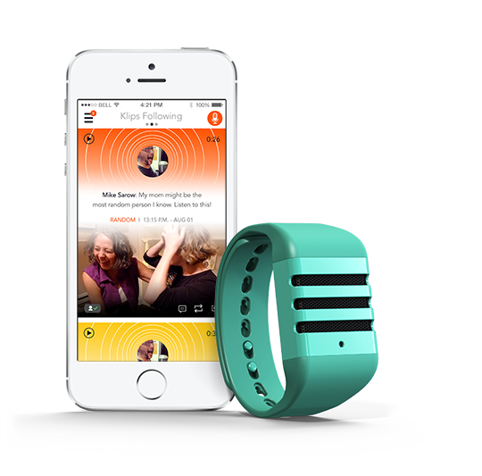
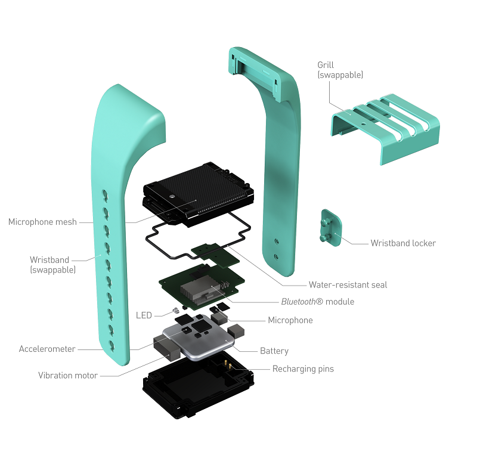

August, 2014 - May, 2016
Product Overview: An audio recording wristband that lets you go back in time 60 seconds to save what you just heard.
App and device

After wrapping up the Venture for America training camp I made my way to my new home in Cincinnati. Once I got settled in to work at Kapture it became clear that the business / growth / marketing role I'd been expecting wasn't nearly as critical as originally thought. Instead, job number one was to figure out the ideal order fulfillment process. We had other teams working on the engineering and manufacturing but hadn't figured out how we would ship the thousands of devices to our pre-order customers once they were ready. I enjoyed the open ended task of comparing third party logistics (3PL) firms, fulfillment by Amazon, and running our own in-house fulfillment, which we eventually chose.
With this designed and ready for when our wristbands arrived, I turned my attention the other way, to our customers. We had a ragtag mix of tools we were using to communicate with our customers and no guarantee that their messages were being received and processed. I set up a standard set of tools for our team to use and led the process of adopting them, taking time every morning to route customer communication to the right person and respond to my own queue. Soon we'd burned down our significant backlog of messages and kept on top of that daily rhythm.
Device 'exploded' view

At this point it was obvious that our engineering and manufacturing teams were far behind schedule and needed help. Four months in, I volunteered and was accepted as the new head of our engineering and manufacturing teams around the world. We had Android and iOS developers in both Argentina and Spain, firmware developers in Kentucky and California, circuit designers in California and in Hong Kong, and our manufacturer in southern China. Needless to say, it was a challenge to coordinate and stay on top of everything. 6 months later we had our first completed batch of devices in hand, almost three years after the journey to make them started. I felt proud to have been the one to lead that phase to completion.
However, a new phase quickly developed for me; whereas my first task was operations focused and my second was product management focused, this was deeply code focused. I had to redesign and recode the device's firmware user interface (written in C). I'll admit I was more than a bit apprehensive to design, write, test, and deploy my own over-the-air update to thousands of customers in over fifty countries. Luckily I passed that milestone without accidentally bricking everyone's Kapture devices (totally breaking their software) and even received very favorable reviews for the redesign!
Finally, with upgraded products in our inventory and consistent processes for both fulfilling orders and responding to customers, I turned to our last major problem: sales. We had built our e-commerce site on Shopify and had set up Google Analytics to help us understand how people navigate throughout our site. Sifting through the data from these two tools, the symptoms pointed to the product purchase page being the worst offender in our ordering process. I took the initiative to design totally new product bundles, new wireframes, and new pricing models. Once the Kapture team agreed on our new design, I got to work learning how to use Ajax and Liquid to make Shopify's unique platform do things it isn't designed to do. While my new design did convert customers much more effectively, the difference didn't prove to be enough to overcome the operating costs of the business and they began the process of winding down. I then left Kapture, proud of my accomplishments there, to go launch Project Birdhouse.
Continue to read more about building the technology behind Project Birdhouse.